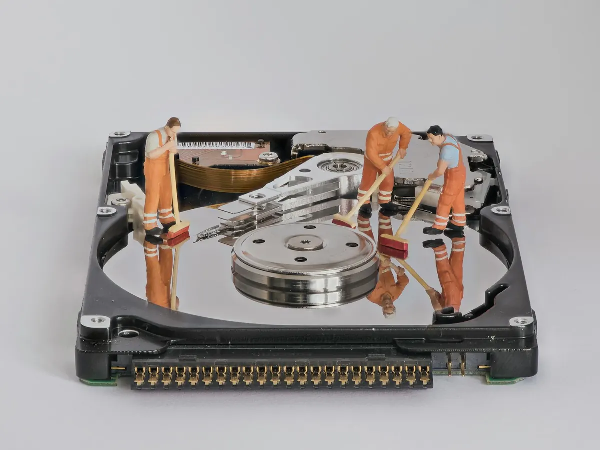
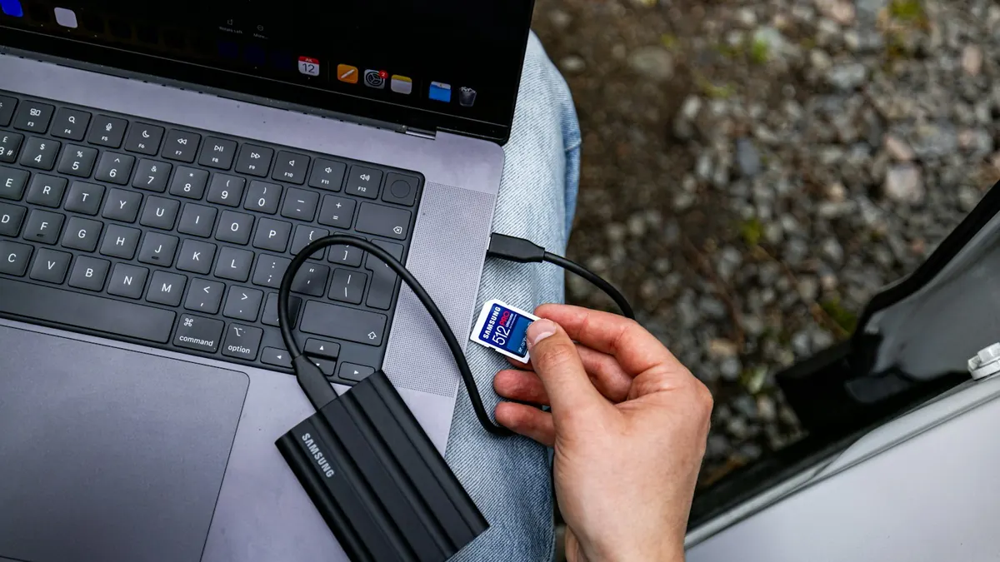
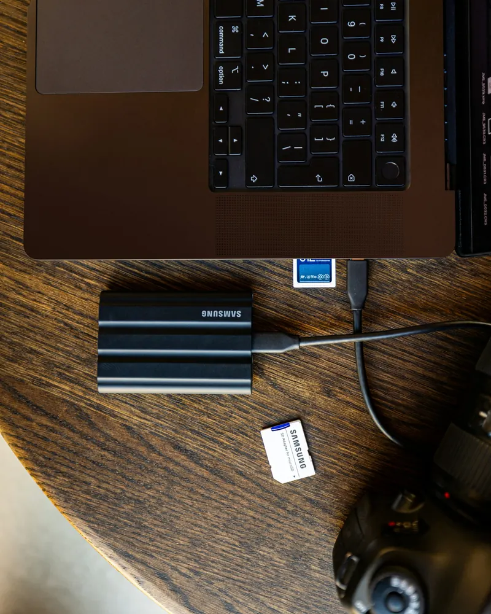
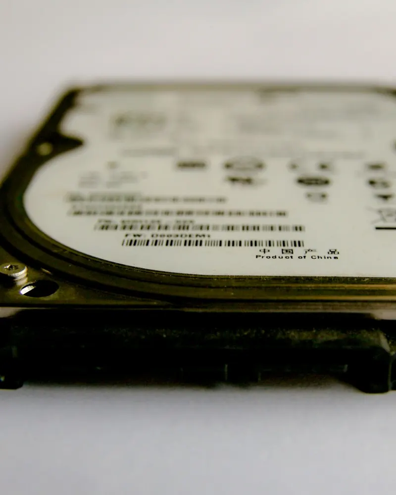

Fichiers supprimés par erreur
Corbeille vidée, dossier effacé, carte mémoire formatée : souvent récupérable tant que rien n'a été réécrit par-dessus.
Photos effacées par erreur, disque externe qui n'est plus reconnu, ordinateur qui ne démarre plus avec tous vos documents dedans ? Nous faisons le diagnostic, récupérons ce qui peut l'être et mettons en place une sauvegarde pour que cela n'arrive plus.

Les premières minutes comptent. Ces gestes simples préservent vos chances de tout retrouver :

Avant de commencer, nous vous disons honnêtement quelles sont les chances de récupération.
Corbeille vidée, dossier effacé, carte mémoire formatée : souvent récupérable tant que rien n'a été réécrit par-dessus.
Si le disque est intact, nous en extrayons vos fichiers et les copions sur un support sain, même si Windows ou l'écran est hors service.
Câble, connecteur, système de fichiers abîmé : nous identifions la panne et récupérons le contenu quand c'est possible.
Carte SD illisible, photos introuvables, téléphone à remplacer : nous récupérons et rangeons vos souvenirs.
Chute, cliquetis, dégât des eaux : la récupération demande un laboratoire spécialisé. Nous vous orientons vers un laboratoire spécialisé.
La meilleure récupération est celle qu'on n'a pas à faire : disque externe, iCloud, OneDrive ou Google Photos, configurés une fois pour toutes.
Un disque peut lâcher du jour au lendemain, un téléphone se perdre, un ordinateur être volé. Une règle simple vous protège :
La plupart des récupérations (fichiers supprimés, ordinateur qui ne démarre plus, disque reconnu) se font à domicile ou en nous confiant l'appareil. La mise en place des sauvegardes peut ensuite se faire à distance.
Nous travaillons toujours sur une copie, sans jamais modifier le support d'origine.

Nous déterminons si la panne est logicielle ou matérielle et vous indiquons honnêtement les chances de récupération avant de commencer.
Les fichiers sont copiés vers un disque séparé, sans écrire sur le support d'origine, pour ne pas compromettre la suite.
Vous vérifiez que les photos et documents importants sont bien là, puis nous les remettons sur l'appareil de votre choix.
Disque externe, cloud ou les deux : nous configurons une sauvegarde automatique et vous montrons comment vérifier qu'elle fonctionne.

Souvent oui, tant que l'espace n'a pas été réutilisé : c'est pourquoi il faut arrêter d'utiliser l'appareil au plus vite. Sur les disques SSD récents, la récupération est plus difficile, car le système efface rapidement les données supprimées.
Pas forcément. Une panne de Windows, de l'écran ou de la carte mère laisse en général le disque intact : nous en extrayons vos fichiers et les copions sur le support de votre choix.
Oui. Nous ne consultons vos fichiers que pour vérifier qu'ils ont bien été récupérés, et nous n'en conservons aucune copie après la restitution.
Avec une sauvegarde automatique sur un disque externe et un service en ligne comme iCloud, OneDrive ou Google Photos, idéalement les deux. Nous la mettons en place et vous montrons comment vérifier qu'elle fonctionne.
Imprimante, nouvel ordinateur, smartphone… retrouvez tous nos services sur la page assistance aux particuliers.

Appelez-nous : nous établissons un premier diagnostic gratuit par téléphone.